Total sequences = 8127
[90% CI]
positive seq. - negative seq.
[19.95, 30.41]

[4.28, 11.94]

[4.25, 11.59]

[2.93, 9.98]

[2.53, 8.28]

[2.09, 7.78]
[-6.44, -1.39]
[1.26, 6.19]

[0.94, 5.79]
| Rank | Motif(s) | Motif logo |
Signed -log10 p-value [90% CI] |
# mutation (% total seq) | # pos mutation (% total mutation) | # neg mutation (% total mutation) | Median score difference | Mean score difference | Score difference distribution positive seq. - negative seq. |
|---|---|---|---|---|---|---|---|---|---|
| 1 | CEBPE | CEBPD | CEBPB | CEBPG | Cebpa | CEBPA | CEBPA | CEBPB | HLF | CEBPD | CEBPA | HLF | CEBPG(var.2) | DBP | ATF4 | HLF | NFIL3 | TEF | ATF4 | NFIL3 | 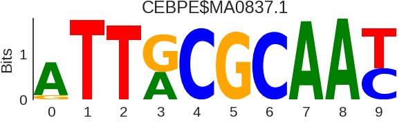 |
25.0 [19.95, 30.41] |
325 (4.0%) | 286 (88.0%) | 39 (12.0%) | 2.09 | 2.02 | 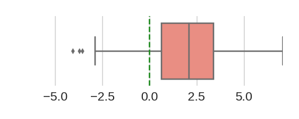 |
| 2 | SPI1 | SPIC | |
7.56 [4.28, 11.94] |
320 (3.94%) | 213 (66.56%) | 107 (33.44%) | 0.91 | 0.85 | 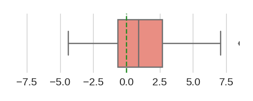 |
| 3 | ETV5 | Spi1 | ELF5 | ELK3 | EHF | ETV6 | ELF3 | ETV1 | FLI1 | ELF1 | ERF | SPIB | FEV | ELK1 | Ets1 | GABPA | Erg | ELF1 | ETV4 | EHF | ETV1 | ELK4 | ERG | ETS1 | ETV5 | ELF4 | ETV3 | ETS2 | FLI1 | ELK4 | Gabpa | ETV4 | ZBTB7A | ETV2 | SPI1 | ELF3 | ELF2 | ELF1 | ELF5 | SPI1 | FEV | GABPA | EHF | |
7.52 [4.25, 11.59] |
258 (3.17%) | 171 (66.28%) | 87 (33.72%) | 0.41 | 0.7 | 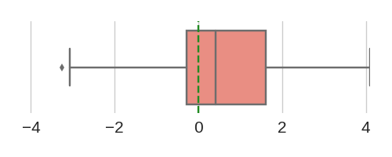 |
| 4 | IKZF1 | |
6.05 [2.93, 9.98] |
261 (3.21%) | 161 (61.69%) | 100 (38.31%) | 0.27 | 0.56 | 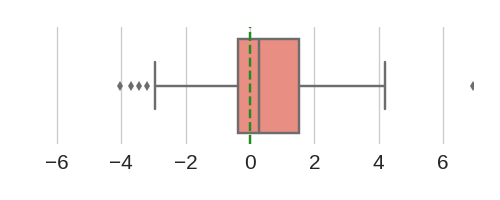 |
| 5 | SPI1 | |
5.13 [2.53, 8.28] |
125 (1.54%) | 85 (68.0%) | 40 (32.0%) | 0.38 | 0.58 | 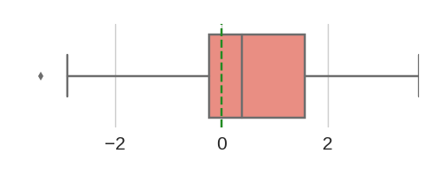 |
| 6 | SPIB | |
4.54 [2.09, 7.78] |
168 (2.07%) | 107 (63.69%) | 61 (36.31%) | 0.53 | 0.64 | 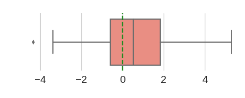 |
| 7 | ZEB1 | 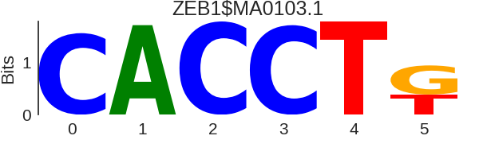 |
-3.43 [-6.44, -1.39] |
169 (2.08%) | 62 (36.69%) | 107 (63.31%) | -0.22 | -0.43 | 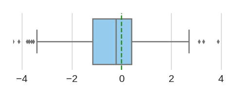 |
| 8 | Gmeb1 | FOSL1::JUND(var.2) | FOSL1::JUN(var.2) | JUNB(var.2) | GMEB2 | Atf1 | FOSB::JUNB(var.2) | Crem | FOSL2::JUN(var.2) | FOSB::JUN | Creb5 | FOS::JUN(var.2) | FOSL2::JUNB(var.2) | ATF7 | JUN | FOSL2::JUND(var.2) | CREB3L4(var.2) | JUN::JUNB(var.2) | JUND(var.2) | CREB1 | JDP2(var.2) | JUNB(var.2) | ATF3 | CREB1 | CREM | ATF2 | CREB1 | 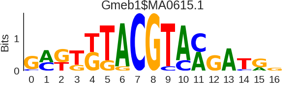 |
3.25 [1.26, 6.19] |
437 (5.38%) | 273 (62.47%) | 164 (37.53%) | 0.23 | 0.45 | 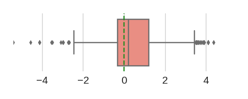 |
| 9 | JUN::JUNB | FOSL1::JUND | FOSL1::JUN | FOS::JUN | FOSB::JUNB | FOSL2::JUN | FOSL2::JUND | BATF3 | FOS::JUND | FOSL1 | JDP2 | FOSL2::JUNB | NFE2 | BATF | FOS::JUNB | JUND | BATF::JUN | JUN(var.2) | JUNB | BATF::JUN | FOS::JUN | FOSL1::JUNB | FOSL2 | JUN::FOS | Smad2::Smad3 | JUND | JUNB | FOS | FOSL1 | |
2.98 [0.94, 5.79] |
253 (3.11%) | 172 (67.98%) | 81 (32.02%) | 0.61 | 0.6 | 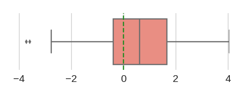 |